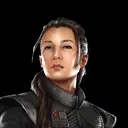
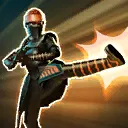
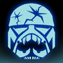

Fennec Shand
Lethal Bounty Hunter capable of taking on the most dangerous foes

Lethal Bounty Hunter capable of taking on the most dangerous foes

Deal Special damage to target enemy 5 times. If the target has no Protection, this ability deals 50% more damage. If it's Fennec Shand's turn and she has Seasoned Veteran, Fennec gains Offense Up for 1 turn.
Seasoned Veteran: Fennec can ignore Taunt effects and gains additional effects on her abilities
Deal Special damage to all but the weakest enemy. Then, deal Special damage to the enemy that was the weakest at the start of this attack; this deals 50% more damage for each other enemy damaged during this ability.
If this ability deals damage, the selected target is inflicted with Armor Shred and all Dark Side Scoundrel allies gain Overconfident for 2 turns if they do not have it, which can't be copied or resisted. If all Dark Side Scoundrel allies already have Overconfident, instead all Scoundrel allies gain Overconfident for 2 turns, which can't be copied or resisted.
If Fennec has Seasoned Veteran, this attack can't be evaded and inflicts an additional stack of Armor Shred.
Overconfident: -20% Defense, +50% Offense, +10% Speed, +15% Evasion
At the start of battle, Fennec Shand gains +100% Defense, Max Health, Max Protection, and Offense. These bonuses are reduced by 25% for each other ally present at the start of battle.
When Fennec Shand is in the Leader slot, and not the Ally slot, the following Contract is active:
Contract: 20 debuffs are dispelled or expire from Bounty Hunter or Scoundrel allies. (Only Bounty Hunter or Scoundrel allies can contribute to the Contract.)
Reward: All Bounty Hunter allies have their payouts activated, and all Bounty Hunter or Scoundrel allies gain 20% Defense and Overconfident until the end of battle, which can't be copied, dispelled, or prevented.

Whenever Fennec Shand gains Tenacity Up, she gains 10% Offense (stacking) until the end of encounter, increased to 20% if The Mandalorian (Beskar Armor) is an ally. If Boba Fett, Scion of Jango is in the Leader slot, this bonus is doubled and she starts the battle with Bounty Hunter's Resolve. Whenever an ally loses Overconfident, Fennec gains 20% Turn Meter.
Whenever Fennec Shand receives a Reward from a Contract, she also gains the following Payout. (Contracts are granted by certain Bounty Hunter Leader Abilities.)
Payout: Fennec receives +15% Critical Chance, +25% Critical Damage, and Seasoned Veteran until the end of the battle, which can't be copied, dispelled, or prevented.